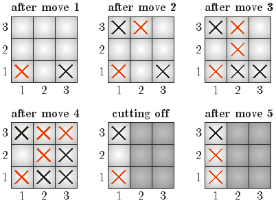

|
|||||||||||||||||
|
Server time: 2006-01-10 05:49:58 |
SPOJ Problem Set313. The Game of Crosses & CrossesProblem code: CROSSES
The game of gomoku (otherwise known as naughts & crosses), played on an n x n board has many interesting variations. One of them is the Game of Crosses & Crosses, with the following set of rules:
The game of crosses & crosses feels rather like playing a degenerated game of Go with an army of suicide bombers. For many years now it has been the favourite passtime of Bytelandian schoolchildren during their lessons. Little Johnny was no different, and among his friends he actually became a notable crossing champion. But not many people knew about Johnny's crossing talent, and Johnny often used this to his advantage. So when a few years after Johnny's abdication from the throne of Byteland an unsuspecting publisher signed a million dolar contract with the ex-king for a series of memoirs entitled The famous victories of Johnny the Great, he was certainly not prepared for what he received -- a detailed account of Johnny's childhood games of crosses & crosses. To make matters worse, all accounts are written by Johnny in exciting prose, rich in action, e.g.: "Then I played yet another game on a 3x3 board. I placed my first cross at (1,1). Then I placed a cross at (2,3). The next cross I placed at (2,2). The cross after that I placed at (3,3). Finally, I placed a cross at (1,2) and I won the game 2:1.". In a desperate effort to save the day, the publisher employed you to create illustrations for the book. You are given a free hand in reinacting the games (and in particular the oponent's moves, which Johnny has modestly left out), provided your version of events is not an evident contradiction of Johnny's text. InputInput begins with a line containing a single integer t (t=100). t test cases follow. Each test case starts with a line with three integers describing a single game: n sr sb, denoting the length of the side of the playing board, the number of points scored by the red player (Johnny) and the number of points scored by the black player (Johnny's oponent), respectively (3<=n<=250, 0<=sb< sr). The next ceil(n2/2) lines contain 2 integers xi yi each - the coordinates of the squares where Johnny placed his crosses in successive moves (1<= xi, yi <= n). OutputFor the i-th test case output a line with the text case i Y or case i N, specifying whether you wish to solve the given case. Then in the former case print exactly floor(n2/2) lines containining 2 integers each - the coordinates of the squares where Johnny's anonymous oponent placed his crosses in successive moves. ScoringThe score awarded to your program is equal to the number of correctly solved test cases. For each case, the game defined by yours and Johnny's description must have the outcome (final score) defined at input. ExampleInput: 1 3 2 1 1 1 2 3 2 2 3 3 1 2 Output: case 1 Y 3 1 1 3 2 1 3 2 Score: 1  Warning: large Input/Output data, be careful with certain languages
|
||||||||||||||||
| |||||||||||||||||